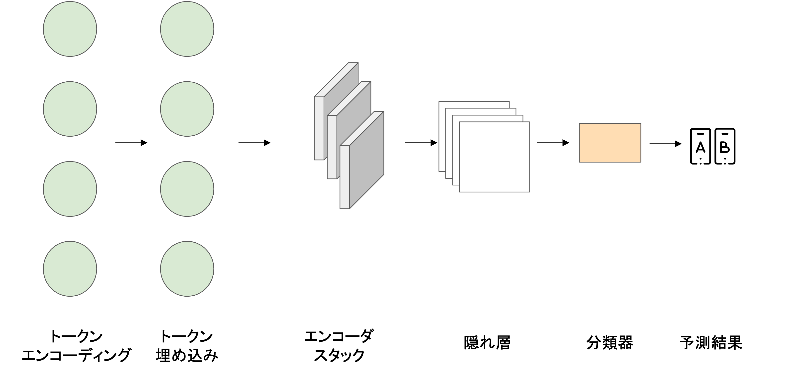

転移学習とファインチューニング#
基本概念#
転移学習は、あるタスクの学習で得られた知識を、他の関連するタスクの学習に適用する手法を指します。一般的には、以下のステップで行われることが多いです：
事前学習: 事前学習モデル（pre-trained models)とは、大規模なデータセットを用いて訓練した学習済みモデルのことです。一般的に、大量のデータ（例えば、インターネット上のテキストデータ）を使用して、モデルを事前に学習します。この時点でのモデルは、言語の汎用的な特徴や構造を捉えることができます。
ファインチューニング(fine-tuning): 事前学習モデルを、特定のタスクのデータ（例えば、感情分析や質問応答）でファインチューニングします。事前学習モデルでは汎用的な特徴をあらかじめ学習しておきますので、手元にある学習データが小規模でも高精度な認識性能を達成することが知られています。

Note
Transformerを用いるモデル
2018年には、Self-Attentionと転移学習を組み合わせたTransformerとして、次の二つのモデルがリリースされました。
GPT (Generative Pre-trained Transformer) は、Transformerアーキテクチャデコーダーのみを使用することで、単一のテキストデータを条件として次の単語を予測するというタスクを行います。
BERT（Bidirectional Encoder Representations from Transformers）は、Transformerアーキテクチャのエンコーダ部分を使用し、事前学習時に言語の広範な文脈を学ぶことができます。
入力テキストの情報は双方向に（すなわち、テキストの前後の文脈の両方を考慮した形で）エンコードされます。これが、BERTの「双方向性」の主な理由です。
事前学習の際の主なタスクは、マスクされた言語モデル (Masked Language Model, MLM) です。具体的には、入力テキストからランダムにいくつかの単語を「マスク」（隠す）し、そのマスクされた単語を正しく予測することを目的としてモデルを学習させます。
テキスト分類器の学習#
Transformerを使ったテキスト分類モデルのアーキテクチャーを確認してましょう。
テキストをトークン化する上で、低次元空間に存在するベクトルであるトークン埋め込みに変換します。
トークン埋め込みはエンコーダブロック層に渡され、各入力トークンの隠れ状態が得られます。
事前学習で、各隠れ状態はマスクされた入力トークンを予測する層に与えられます。

特徴抽出#
Transformerを特徴抽出器として使われる際、事前学習済みモデルのパラメータを凍結し、隠れ状態を分類器の特徴として利用します。
ファインチューニング#
事前学習済みのモデルを特定のタスクのデータセット（例: レビューを元にした感情分析）で再度学習させます。この際に、モデルの全てのパラメータ（または一部）は調整され、特定のタスクに特化した性能を達成するようになります。
ファインチューニングの間にモデルのパラメータを調整することで、モデルは事前学習で得られた一般的な知識と、新しいデータセットの特定のタスクに関する情報の両方を持つことになります。これにより、小さなデータセットでも高い性能を持つモデルを得ることができます。